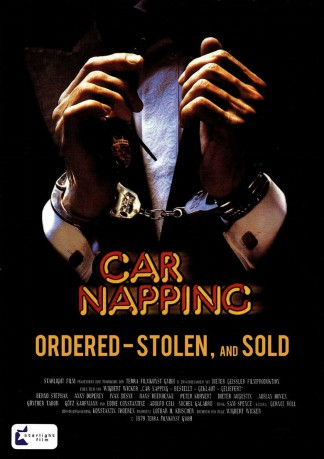

#2949 Car-Napping - Bestellt, geklaut, geliefert
 
 IMDB-Wertung: 6.3 / 10
IMDB-Wertung: 6.3 / 10  Metascore: 0
Metascore: 0 
Autodesigner Robert Mehring wird von seinem Auftraggeber hereingelegt und dann auch noch um seinen Porsche-Carrera erleichtert. Also wird er selbst zum Kopf einer Bande von Autoknackern und sorgt dafür, dass reihenweise edelste Porsches in Cannes, Paris und bei den Salzburger Festspielen verschwinden. Doch die Konkurrenz und auch die Polizei schlafen nicht, und in Italien scheint sich das Netz um Mehring zuzuziehen.
Jahr: 1980
Dauer: 85 Minuten
FSK: 6
Land: West-Deutschland Studio: CentfoxTonspuren:
Untertitel:
Auflösung: SD (720x540) Größe: 781 MB
Genre: Komödie, Krimi
Regisseur: Wigbert Wicker
Drehbuch: Hans Drawe, Wigbert Wicker
Soundtrack: Sam Spence
Darsteller:
- Eddie Constantine als Laroux, police officer
 Adolfo Celi als Head of police in Palermo
Adolfo Celi als Head of police in Palermo- Bernd Stephan als Robert Mehring / Baron von Dahlberg
- Anny Duperey als Claudia Klessing, lawyer
- Hans Beerhenke als Aichinger
- Ivan Desny als Consul Barnet
- Adrian Hoven als Entrepreneur Benninger
- Götz Kauffmann als
- Dieter Augustin als Fischer - Private detective
- Peter Kuhnert als Mario, car racketeer
- Guenther Tabor als Doctor Ahrens
- Luigi Tortora als Mario, car racketeer
- Alexis von Hagemeister als
- Peter Schiff als
- Erich Will als
- Franz Marischka als
- Osman Ragheb als
- Toni Netzle als
- Kurt Hartmann als
- Jo Friedrichs als
- Inge Ranft als
- Peter Döring als
- Josef Schwarz als
- Claude Legros als
- Massimo Pacifico als
 Michel Galabru als Mario, second hand car dealer
Michel Galabru als Mario, second hand car dealer- Norbert Langer als Robert Mehring / Baron von Dahlberg , uncredited
Datei: X:\1980\Car-Napping - Bestellt, geklaut, geliefert (1980, FSK6, 720x540).avi seit 05.01.2016
Festplatte: HD 1980-1986
 Es gibt insgesamt 33 Filme in der Gruppe '1980'
Es gibt insgesamt 33 Filme in der Gruppe '1980'